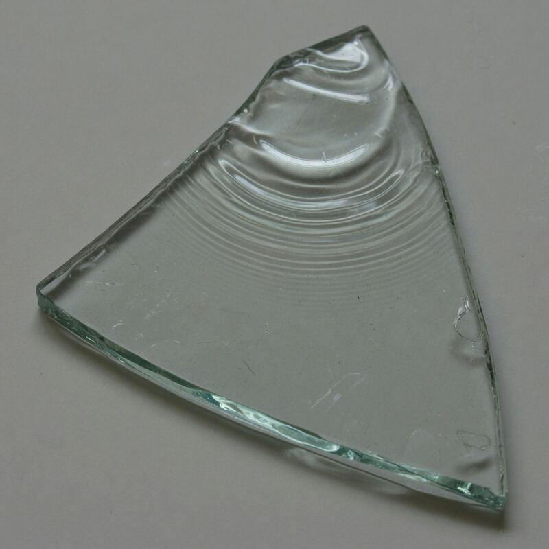

花会倒过来变大，还是变小？
凸透镜可会聚平行光到焦点，也能成放大虚像或倒立实像（条件满足时）。凹透镜发散。对照平面镜反射。严禁用透镜对太阳看或点火玩耍；室内灯源成人看管。
这一页在学：凸透镜会聚、凹透镜发散；不是「放大镜魔法」。严禁对太阳看。

透镜玩具台
点下面三个大按钮，看花和光线怎么变。
先点「靠近」，看倒着的花变大。再点「换成凹透镜」，看光往两边跑。
尚未完成：先靠近焦点看一次，或离远看一次。
先猜一猜
先押，再点按钮看对不对。
第 1 题：f=8，物距从 24 改到 12（更近焦点），放大率大约怎样？
押一个。先点「拉远」，再点「靠近」。
第 2 题：物距等于焦距（u=f=8）时，公式分母为 0，本页怎么处理？
押好后点图鉴「焦点」，或让大人把物距调到和焦距一样。
第 3 题：换成凹透镜（中间瘪），花通常怎样？
押好后点「凹透镜」对照。
凸透镜把光收拢，离焦点远近会改像；绝不用透镜看太阳
先点「靠近」，看倒着的花变大。再点「拉远」，看像变小或仍倒着。再点「换成凹透镜」，看光往两边跑、花变小。同一朵花、同一条轴，只改远近，或中间鼓还是瘪。
中间鼓的玻璃（凸透镜）让光线往中间收。物靠近焦点，像常常变大，有时还会倒过来。中间瘪的凹透镜把光推开，像常变小。平面镜是反射，左右对调，不靠厚度收光，另开一行。
舞台上的放大率按 f÷|物距−焦距| 来比大小，贴在焦点上封顶 40。这是本页比较尺子，不是每一片真透镜的公式，更不是出厂说明书。严禁用透镜看太阳或对日聚焦点火。灯源成人管。
点一张贴纸卡，舞台就演戏
鼓玻璃、瘪玻璃、水珠、眼睛，点哪张演哪幕。
点一张图鉴，对照舞台上看放大还是缩小。
猜一猜
中间鼓的玻璃（凸透镜）看花，像常常怎样？中间瘪的呢？
先押一个，再点「看答案」。
任务：靠近焦点和离远都看
先把物距调到靠近焦距看一次，再调到比焦距大 12 以上看一次。两头都看过即可完成。点「靠近」和「拉远」就会记上。
开放式提示不会代替上面的正式任务。
给家长的本页尺子
本页比较尺子：放大率按 f ÷ |物距−焦距| 来比大小，贴在焦点上封顶 40。这不是每一片真透镜的公式，也不是出厂说明书。孩子主操作是上面三个大按钮；滑杆留给想自己调的大人。
靠近焦点看一次，拉远再看一次，比像怎么变
舞台上只改一件事：花离透镜有多远。同一朵花、同一片凸透镜。先点「靠近」，看倒着的花变大；再点「拉远」，看像变小或仍倒着。这样比，才知道改像靠的是离焦点远近，不是玻璃「会魔法」。
回家只带两句：「鼓的把光往中间收」；「离焦点远近会改像」。不要写成「玻璃会变魔术」。绝不用透镜看太阳。凹透镜若要写，另开一行：中间瘪，光往两边跑，花变小。
中间鼓，光线穿过以后往中间收。放大镜、老花镜、相机镜头都是这一家。
中间瘪，光线穿过以后往两边散开。近视镜常用它，像常常变小，不是缩小咒。
把花靠近凸透镜、停在焦点旁边，像常常会变大，有时还会倒过来，玻璃没换魔法。
把花拉远、过了焦点，像可以倒过来，还会变小。只改远近，中间厚薄没换。
圆鼓鼓的水珠也是中间厚，字会变大。和凸透镜同一条弯光账，仍不要对日。
透镜不要对着太阳看，会伤眼睛，也会把纸烫糊。灯源由大人管，儿童不试。
- 点「靠近」。记像大不大、倒不倒。
- 点「拉远」。只改远近，再记一次。
- 说玻璃。鼓的收光，瘪的散光。平面镜另开一行。
- 写完成句。光往中间收，离焦点远近改像。划掉「玻璃会魔法」。不看太阳。
鼓玻璃把光收到一起，离得远近，花的样子会变。绝不要拿它看太阳。
靠近焦点常常放大；离远可能倒过来。瘪玻璃把光推开。本页放大率只用来比较，不是真透镜说明书。
凸透镜会聚，物距相对焦距决定实像/虚像与放大率。本页 f÷|u−f| 贴焦点封顶 40，是比较尺子，不是高斯成像公式的完整解。凹透镜发散。严禁对日。
这在教什么：孩子要能指着舞台说「靠近变大、拉远改像」，并否定「玻璃会魔法」。完成看的是对照，不是背「焦距」两个字。红线是不看太阳。
- 鼓玻璃把光往哪收？瘪的呢？
- 靠近焦点时，像常常怎样？拉远呢？
- 水珠为什么也能把字放大？
- 能对着太阳看吗？本页数字能当验光单吗？
眼镜和相机是邻居；平面镜反射另开一行
同一片凸透镜，先只改物距。眼镜、相机、放大镜、水珠都是会聚或发散的亲戚，但本页验收的是「靠近变大、拉远改像」。近视常用凹透镜把像推远一点，老花常用凸透镜帮忙收近。本页不验光、不配镜。
相机几片凸透镜把光收到传感器上。投影仪把小小的图放大投到墙上。望远镜两头各有透镜。都是同一条弯光账，不要写成「相机等于放大镜」。
平面镜是反射，左右对调，不靠中间厚薄收光。不要混成一句「都是镜子」。本页放大率 f÷|u−f| 只是比较尺子：物靠近焦点，分母变小，尺子上的数变大；贴在焦点上封顶 40。它不是每一片真透镜的公式，也不是出厂说明书。
放大镜对日能点燃纸。儿童不做。灯源成人管。真透镜不要对着皮肤或纸长时间晒。
这一页只对照光线怎么收、怎么散，不教你自己配眼镜，也不当验光单。
镜头把光线收到底片或传感器上，才能留下影像。和放大镜同一家，不是同一把尺。
平面镜是反射，左右对调。和透镜弯光不是同一课，完成句不要写「都是镜子」。
本页放大率按焦距和物距来比，贴焦点封顶四十。只用来比较方向，不是真透镜说明书。
圆鼓鼓的水珠也算中间厚的凸透镜。字会变大，仍不要拿它对着太阳看。
对日看会伤眼睛，也会把纸烫糊。这一栏再钉一次：灯源归大人，绝不对眼对日。
对照：靠近变大 · 拉远改像 · 玻璃会魔法
三列用同一朵花、同一片凸透镜。先只改物距。一次改两样，分不清到底是谁让像变的。
靠近焦点：像常常变大，有时倒过来。拉远：像可倒过来或变小。「玻璃会魔法」整列划掉：关掉弯曲，花还在，像却不那样变。
凹透镜是加试，不是主任务：中间瘪，光往两边跑，花通常变小。本页尺子用来比较方向，不要把它背成自然常数。
花停在焦点旁边时，透过中间厚的凸透镜，常常看到更大的像，不是魔法。
花离透镜比焦点更远时，像会改样子，还可能倒过来、变小。只改远近，不是换魔法玻璃。
不是魔法把花变大，是中间厚的透镜把光线弯到一起。关掉弯曲，花还在原处。
中间瘪，光往两边跑，花通常变小。凹透镜另开一行，不和「拉远」叠在同一档。
本页放大率只按焦距和物距来比近和远，用来对照方向，不是出厂公式。
回家只记：凸透镜把光往中间收，离焦点远近会改像。绝对不要看太阳。
靠近、拉远两行记下像怎么变
在纸上画两行：靠近焦点，写大 / 倒；拉远，再写一回。两行并排，比背透镜公式有用。
口头只要两句：「鼓的把光往中间收。」「离焦点远近会改像。」有人说「玻璃会魔法」，让孩子指着第二行反驳。凹透镜若要写，另开一行：中间瘪，花变小。
灯源成人管。真透镜不要对着太阳看，也不要对着皮肤或纸长时间晒。本页数字不要抄进验光单。
一行记靠近时像变大，一行记拉远时像可能倒过来。对照比抄数字清楚。
回家说得出：凸透镜把光往中间收；透镜不对着太阳，更不要拿来点火照眼。
凹透镜另记一行：中间薄，光被往两边推开，花会变小，不要和拉远写成一句。
不要拿透镜对着太阳点火，也不要拿来照眼睛。灯源归大人，儿童只看舞台。
怎样才算公平的一次比较
想知道「像怎么变靠不靠离焦点远近」，就只改物距这一项。同一朵花、同一片凸透镜，先靠近焦点看一次，再拉远看一次。换成凹透镜，是另一次对照，不要和「拉远」叠在同一档里讲。
- 只改这一项：物距（靠近焦点 / 拉远）。
- 先保持不变：同一朵花、同一片凸透镜、焦距先不动。
- 要观察的：像变大还是变小、倒不倒、光往中间收还是往两边跑。
- 另开一行：换成凹透镜，花是不是通常变小。
还可以问下去
- 放大镜看报纸上的字，字变大了。这和本页「靠近焦点」像在哪？能拿放大镜对着太阳玩吗？
- 眼镜片中间鼓还是瘪？近视和老花差在哪？为什么本页不能当验光单？
- 叶子上的水珠把字放大了。水珠中间厚还是薄？它和凸透镜是同一家人吗？
按年龄分层的讲法
同一个现象，三个年龄段讲到哪一层。建议只讲孩子当前那一层，讲完就停，不要把进阶词提前塞进四岁耳朵。
鼓玻璃把光收到一起，离得远近，花的样子会变。绝不要拿它看太阳。能指着舞台说「变大 / 变小」就够了。
靠近焦点常常放大；离远可能倒过来。瘪玻璃把光推开。平面镜是反射，另开一行。本页数字只用来比较，不是说明书。
凸透镜会聚，物距相对焦距决定实像/虚像与放大率。本页 f÷|u−f| 贴焦点封顶 40，是比较尺子，不是完整成像公式。严禁对日。
给家长的问题
- 靠近变大时，孩子指的是倒着的花，还是在说「玻璃会变魔术」？让他再指一次光线往哪拐。
- 拉远、像变小：哪一句四岁听得懂？试「离那个红点远了，花就没那么大」。
- 如果他换成凹透镜、花也变小了——为什么这句不能和「拉远」叠在同一档？差在「改了几样」。
- 平面镜为什么不能当本页完成句？差在反射还是穿过。
- 对日红线怎么说？本页能当验光单吗？数字能抄进说明书吗？
- 水珠把字放大，和本页的鼓玻璃像在哪？能拿水珠对着太阳玩吗？
背后的原理
舞台上不写这些词，留给孩子用眼睛看。家长可以指着图讲：中间鼓的是凸透镜，光线往中间收；中间瘪的是凹透镜，光线往两边散。花靠近焦点，像常常变大；拉远，像可倒过来或变小。
球面折射使近轴光线会聚于焦点；物距与焦距的相对关系决定像距、倒正与放大率。本页「放大率≈f÷|u−f|、贴焦点封顶 40」只是比较尺子，用来让孩子看见「离焦点越近越大」，不是实验室的透镜公式，也不是出厂说明书。
凹面发散。反射镜走另一条边界条件：光被弹开，不穿过。不要把平面镜写成完成句。水珠、放大镜、相机镜头是同一家族的不同尺度。
对日聚焦功率密度足以灼伤视网膜和点燃纸。严禁对日。灯源成人管。舞台是二维教具示意，不代替真实透镜实验。
透镜公式卡 · 放大率≈f÷|物距−f|（贴焦点封顶 40）
物靠近焦点，分母变小，比较尺子上的放大率变大；贴在焦点上本页封顶。凹透镜发散、花变小。严禁对太阳看。
接下来可以去
带走句：凸透镜把光收拢，像要落到该落的地方。眼睛页看晶状体怎样把像落到视网膜上；镜子工坊看光怎么被弹开，不是穿过。